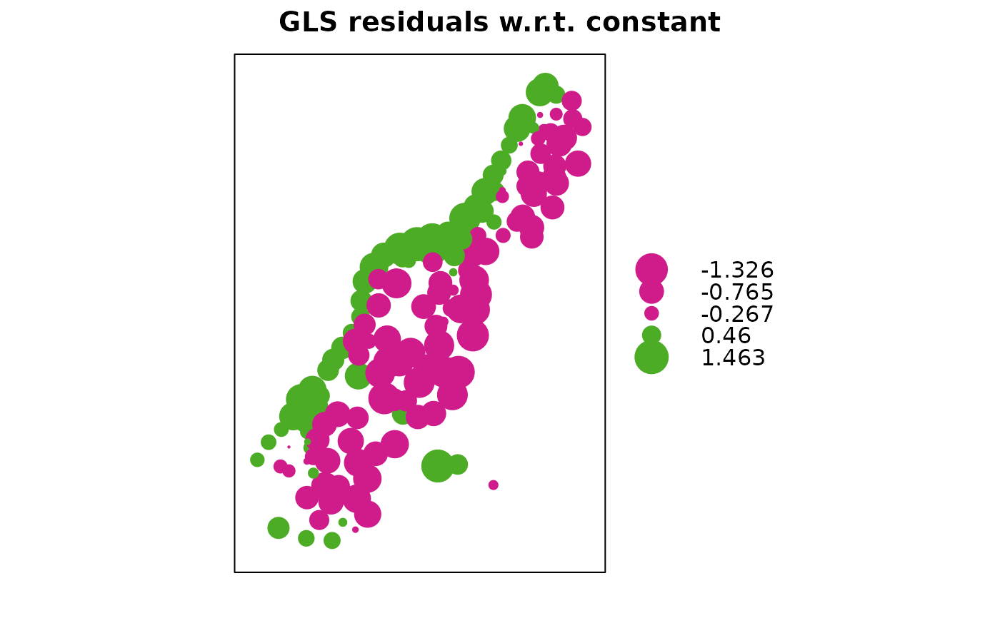
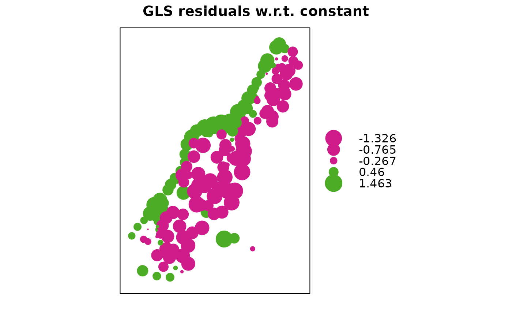

Multivariable Geostatistical Prediction and Simulation
predict.gstat.RdThe function provides the following prediction methods: simple, ordinary, and universal kriging, simple, ordinary, and universal cokriging, point- or block-kriging, and conditional simulation equivalents for each of the kriging methods.
Arguments
- object
- newdata
data frame with prediction/simulation locations; should contain columns with the independent variables (if present) and the coordinates with names as defined in
locations; or: polygons, see below- block
block size; a vector with 1, 2 or 3 values containing the size of a rectangular in x-, y- and z-dimension respectively (0 if not set), or a data frame with 1, 2 or 3 columns, containing the points that discretize the block in the x-, y- and z-dimension to define irregular blocks relative to (0,0) or (0,0,0)---see also the details section below. By default, predictions or simulations refer to the support of the data values.
- nsim
integer; if set to a non-zero value, conditional simulation is used instead of kriging interpolation. For this, sequential Gaussian or indicator simulation is used (depending on the value of
indicators), following a single random path through the data.- indicators
logical; only relevant if
nsimis non-zero; if TRUE, use indicator simulation, else use Gaussian simulation- BLUE
logical; if TRUE return the BLUE trend estimates only, if FALSE return the BLUP predictions (kriging)
- debug.level
integer; set gstat internal debug level, see below for useful values. If set to -1 (or any negative value), a progress counter is printed
- mask
not supported anymore -- use na.action; logical or numerical vector; pattern with valid values in newdata (marked as TRUE, non-zero, or non-NA); if mask is specified, the returned data frame will have the same number and order of rows in newdata, and masked rows will be filled with NA's.
- na.action
function determining what should be done with missing values in 'newdata'. The default is to predict 'NA'. Missing values in coordinates and predictors are both dealt with.
- sps.args
when newdata is of class
SpatialPolygonsorSpatialPolygonsDataFramethis argument list gets passed to spsample to control the discretizing of polygons- ...
ignored (but necessary for the S3 generic/method consistency)
Details
When a non-stationary (i.e., non-constant) mean is used, both for simulation and prediction purposes the variogram model defined should be that of the residual process, not that of the raw observations.
For irregular block kriging, coordinates should discretize the area relative to (0), (0,0) or (0,0,0); the coordinates in newdata should give the centroids around which the block should be located. So, suppose the block is discretized by points (3,3) (3,5) (5,5) and (5,3), we should pass point (4,4) in newdata and pass points (-1,-1) (-1,1) (1,1) (1,-1) to the block argument. Although passing the uncentered block and (0,0) as newdata may work for global neighbourhoods, neighbourhood selection is always done relative to the centroid values in newdata.
If newdata is of class SpatialPolygons or
SpatialPolygonsDataFrame, then the block
average for each of the polygons or polygon sets is
calculated, using spsample to discretize the
polygon(s). Argument sps.args controls the parameters
used for spsample. The "location" with respect to
which neighbourhood selection is done is for each polygon the
SpatialPolygons polygon label point; if you use local neighbourhoods
you should check out where these points are---it may be well
outside the polygon itself.
The algorithm used by gstat for simulation random fields is the
sequential simulation algorithm. This algorithm scales well to large or
very large fields (e.g., more than $10^6$ nodes). Its power lies in using
only data and simulated values in a local neighbourhood to approximate the
conditional distribution at that location, see nmax in krige
and gstat. The larger nmax, the better the approximation,
the smaller nmax, the faster the simulation process. For selecting
the nearest nmax data or previously simulated points, gstat uses
a bucket PR quadtree neighbourhood search algorithm; see the reference
below.
For sequential Gaussian or indicator simulations, a random path through
the simulation locations is taken, which is usually done for sequential
simulations. The reason for this is that the local approximation of the
conditional distribution, using only the nmax neareast observed
(or simulated) values may cause spurious correlations when a regular
path would be followed. Following a single path through the locations,
gstat reuses the expensive results (neighbourhood selection and solution
to the kriging equations) for each of the subsequent simulations when
multiple realisations are requested. You may expect a considerable speed
gain in simulating 1000 fields in a single call to predict,
compared to 1000 calls, each for simulating a single field.
The random number generator used for generating simulations is the native
random number generator of the environment (R, S); fixing randomness by
setting the random number seed with set.seed() works.
When mean coefficient are not supplied, they are generated as well from their conditional distribution (assuming multivariate normal, using the generalized least squares BLUE estimate and its estimation covariance); for a reference to the algorithm used see Abrahamsen and Benth, Math. Geol. 33(6), page 742 and leave out all constraints.
Memory requirements for sequential simulation: let n be the product of
the number of variables, the number of simulation locations, and the
number of simulations required in a single call. the gstat C function
gstat_predict requires a table of size n * 12 bytes to pass the
simulations back to R, before it can free n * 4 bytes. Hopefully, R does
not have to duplicate the remaining n * 8 bytes when the coordinates
are added as columns, and when the resulting matrix is coerced to
a data.frame.
Useful values for debug.level: 0: suppres any output except
warning and error messages; 1: normal output (default): short data report,
program action and mode, program progress in %, total execution time;
2: print the value of all global variables, all files read and written,
and include source file name and line number in error messages; 4: print
OLS and WLS fit diagnostics; 8: print all data after reading them; 16:
print the neighbourhood selection for each prediction location; 32:
print (generalised) covariance matrices, design matrices, solutions,
kriging weights, etc.; 64: print variogram fit diagnostics (number
of iterations and variogram model in each iteration step) and order
relation violations (indicator kriging values before and after order
relation correction); 512: print block (or area) discretization data
for each prediction location. To combine settings, sum their respective
values. Negative values for debug.level are equal to positive,
but cause the progress counter to work.
For data with longitude/latitude coordinates (checked by
is.projected), gstat uses great circle distances in km to compute
spatial distances. The user should make sure that the semivariogram
model used is positive definite on a sphere.
Value
a data frame containing the coordinates of newdata, and columns
of prediction and prediction variance (in case of kriging) or the
columns of the conditional Gaussian or indicator simulations
References
N.A.C. Cressie, 1993, Statistics for Spatial Data, Wiley.
Pebesma, E.J., 2004. Multivariable geostatistics in S: the gstat package. Computers and Geosciences, 30: 683-691.
Examples
# generate 5 conditional simulations
library(sp)
data(meuse)
coordinates(meuse) = ~x+y
v <- variogram(log(zinc)~1, meuse)
m <- fit.variogram(v, vgm(1, "Sph", 300, 1))
plot(v, model = m)
set.seed(131)
data(meuse.grid)
gridded(meuse.grid) = ~x+y
sim <- krige(formula = log(zinc)~1, meuse, meuse.grid, model = m,
nmax = 10, beta = 5.9, nsim = 5) # for speed -- 10 is too small!!
#> [using conditional Gaussian simulation]
# show all 5 simulation
spplot(sim)
 # calculate generalised least squares residuals w.r.t. constant trend:
g <- gstat(NULL, "log.zinc", log(zinc)~1, meuse, model = m)
blue0 <- predict(g, newdata = meuse, BLUE = TRUE)
#> [generalized least squares trend estimation]
blue0$blue.res <- log(meuse$zinc) - blue0$log.zinc.pred
bubble(blue0, zcol = "blue.res", main = "GLS residuals w.r.t. constant")

# calculate generalised least squares residuals w.r.t. linear trend:
m <- fit.variogram(variogram(log(zinc)~sqrt(dist.m), meuse),
vgm(1, "Sph", 300, 1))
g <- gstat(NULL, "log.zinc", log(zinc)~sqrt(dist.m), meuse, model = m)
blue1 <- predict(g, meuse, BLUE = TRUE)
#> [generalized least squares trend estimation]
blue1$blue.res <- log(meuse$zinc) - blue1$log.zinc.pred
bubble(blue1, zcol = "blue.res",
main = "GLS residuals w.r.t. linear trend")
# calculate generalised least squares residuals w.r.t. constant trend:
g <- gstat(NULL, "log.zinc", log(zinc)~1, meuse, model = m)
blue0 <- predict(g, newdata = meuse, BLUE = TRUE)
#> [generalized least squares trend estimation]
blue0$blue.res <- log(meuse$zinc) - blue0$log.zinc.pred
bubble(blue0, zcol = "blue.res", main = "GLS residuals w.r.t. constant")

# calculate generalised least squares residuals w.r.t. linear trend:
m <- fit.variogram(variogram(log(zinc)~sqrt(dist.m), meuse),
vgm(1, "Sph", 300, 1))
g <- gstat(NULL, "log.zinc", log(zinc)~sqrt(dist.m), meuse, model = m)
blue1 <- predict(g, meuse, BLUE = TRUE)
#> [generalized least squares trend estimation]
blue1$blue.res <- log(meuse$zinc) - blue1$log.zinc.pred
bubble(blue1, zcol = "blue.res",
main = "GLS residuals w.r.t. linear trend")
 # unconditional simulation on a 100 x 100 grid
xy <- expand.grid(1:100, 1:100)
names(xy) <- c("x","y")
gridded(xy) = ~x+y
g.dummy <- gstat(formula = z~1, dummy = TRUE, beta = 0,
model = vgm(1,"Exp",15), nmax = 10) # for speed -- 10 is too small!!
yy <- predict(g.dummy, xy, nsim = 4)
#> [using unconditional Gaussian simulation]
# show one realisation:
spplot(yy[1])
# show all four:
spplot(yy)
# unconditional simulation on a 100 x 100 grid
xy <- expand.grid(1:100, 1:100)
names(xy) <- c("x","y")
gridded(xy) = ~x+y
g.dummy <- gstat(formula = z~1, dummy = TRUE, beta = 0,
model = vgm(1,"Exp",15), nmax = 10) # for speed -- 10 is too small!!
yy <- predict(g.dummy, xy, nsim = 4)
#> [using unconditional Gaussian simulation]
# show one realisation:
spplot(yy[1])
# show all four:
spplot(yy)